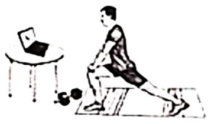

2022年北京市中考英语真题 · 阅读表达 第34、35、36、37、38题
四、阅读表达（每题2分，共10分）
阅读短文，根据短文内容回答问题。
Working Out through Online Videos

Physical exercise is good for our mind, body and spirit. Today, working out through online videos is becoming very popular. Since the Internet is widely used, it’s very easy for us to do so. That means we can work out anytime anywhere.
One of my friends, Lin Fei. followed short workout videos to do daily exercise. “With live programs, I feel like working out with my friends, which encourages me to hold on to the last minute.” she said. Another friend of mine, Michael, told me that workout videos let him feel so comfortable. “I have a fear of working out at the gym（健身房）because I don’t like being watched by others. Working out at home makes working out much more enjoyable.” he said.
With their examples, I decided to give it a try. When I told my plan to my elder sister, a P.E. teacher, she reminded me that workout videos could be helpful but might still carry some problems.
“Without being with someone in person, you will be less willing （愿意的）to work out to your best. Working out at the gym allows you to have advice in real time and get pushed harder.” my sister said to me. “Well, if you really want to have a try. first, choose proper programs or videos. That’s very important. And then ask your friends for advice. Their experiences can give you a good sight into what you can expect. Anyway, don’t be addicted（沉迷的）to it. You should try different ways to work out to be healthy.”
At her suggestions, I finally followed an online workout program with personalized help that is held for three months. After the first period of training, I felt it very practical and helpful when I put in the right amount （量） of work along with a strong will. Compared with going to the gym, using online videos to work out is a much cheaper and time-saving choice. But it can be difficult sometimes when I’m too lazy or too busy to stick to it.
34. Which way to work out is becoming very popular today?
__________________________________________________________________
35. Why does Michael dislike working out at the gym?
__________________________________________________________________
36. What is the problem of working out without someone else in person?
__________________________________________________________________
37 How did the writer feel about his first period of training?
How did the writer feel about his first period of training?
__________________________________________________________________
38. Would you like to follow online videos to work out? Why or why not?
__________________________________________________________________